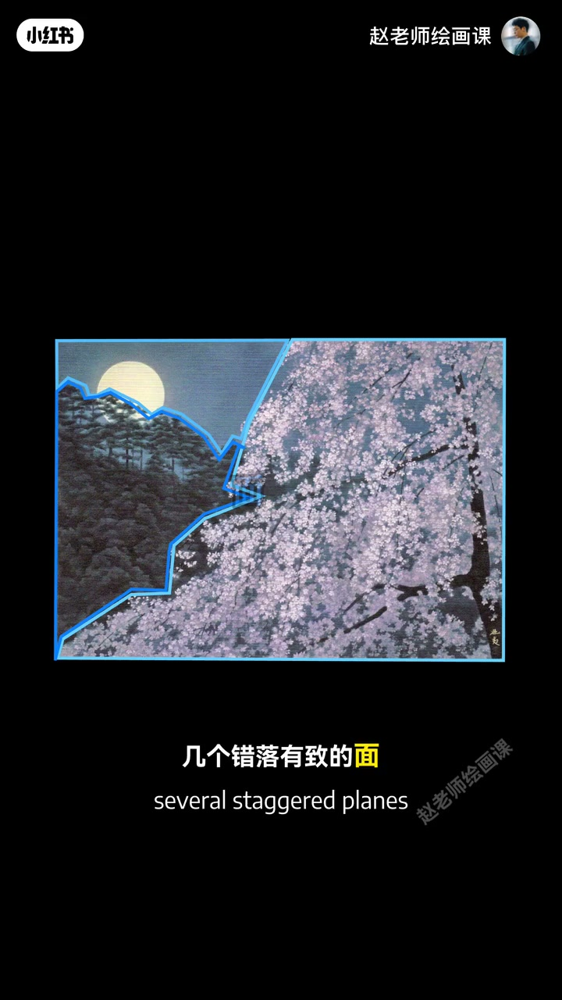
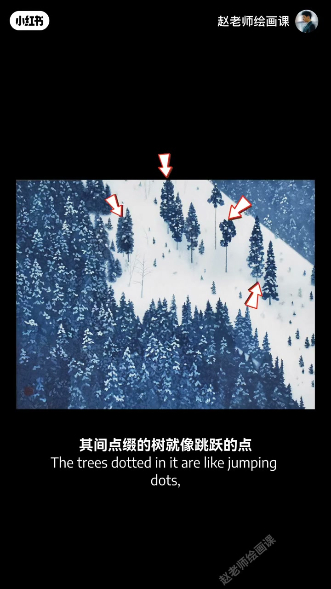
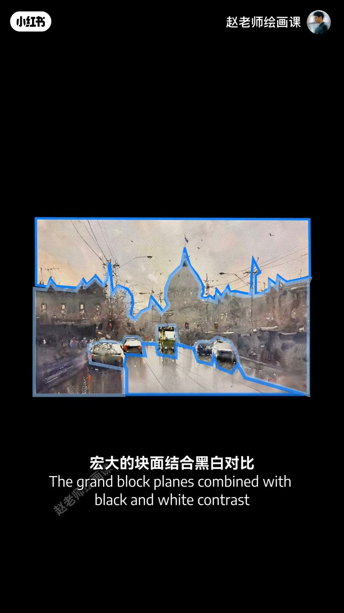
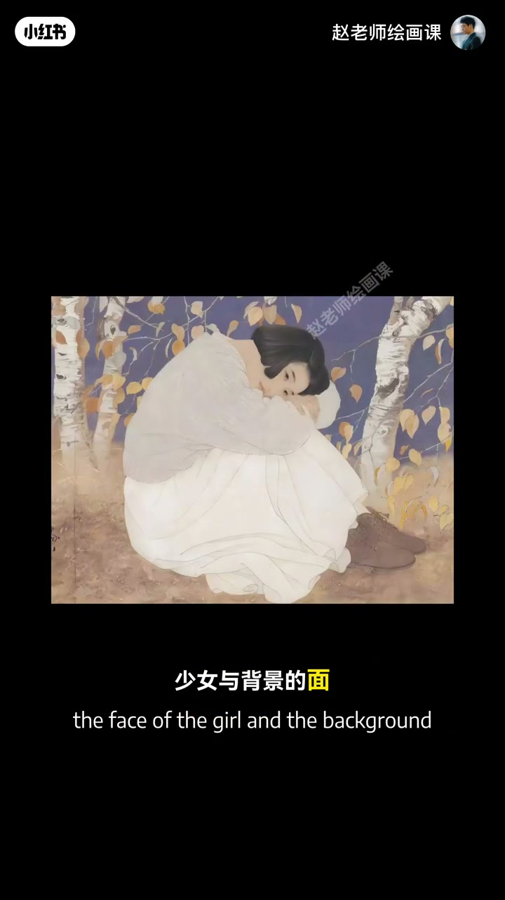

内容要点
上期经典是以点为主导；换成面为主导会怎样？东山魁夷：抛开文学描述，从视觉语言看，几个错落有致的面撑起整幅，块面细腻又概括，气氛沉静悠远；隐约的树与深蓝圆月把诗意推向高潮。雪与树为主的面绝对主导，点缀的树像跳跃的点添生机。西方水彩名家约瑟夫同样以面有序主导：宏大块面结合黑白对比铺逆光，车马灯火作点更夺目。毕沙罗《蒙马特大街》、何家英工笔——少女与背景的面传温暖宁静，点与线跳动添青春灵动。口令：面要整体概括、清晰有序，再稍加点线，表现力质变。
知识结构
错落块面撑气氛；雪树面主导＋树点点缀。
约瑟夫逆光块面；毕沙罗／何家英同语法。
面整体有序；点线点缀即质变。
面主导时先把大块面概括清楚、忌跳脱细节；气氛立住后，再用点或线轻轻点睛。
00:00-01:19东山魁夷：面撑起沉静诗意
上期以点为主导；本期换面主导。东山魁夷作品中，错落有致的面撑起整个画面，块面细腻又概括，气氛沉静悠远；隐约的树与深蓝中的圆月把诗意推向高潮。
另一幅：雪与树为主的面是绝对主导，丰富形状让冬雪充满灵动韵律；点缀的树像跳跃的点，为宁静添生机——这就是面特有的视觉魅力。00:42／01:10。


01:19-02:17约瑟夫、毕沙罗、何家英
水彩名家约瑟夫是这种结构的践行者：极致概括背后是面的有序主导；宏大块面结合黑白对比铺出强烈逆光氛围，车马灯火作为点越发鲜艳夺目。毕沙罗《蒙马特大街》等使用完全一样的视觉语法。
何家英笔下少女与背景的面传递温暖与宁静，点与线的跳动让女孩多一丝青春灵动。01:36／02:08。


02:17-03:08操作：面清晰有序再点缀
面要整体又概括，不能夹杂跳脱的细节；让面本身清晰又有序，画面氛围就成功一大半。再配合点或者线稍加点缀，实际表现力马上有质的飞跃。
现在就打开相机或铺开画布，试着用面来思考。
完整转录（58段）
以下文本由 Whisper medium 模型自动转录，可能存在少量识别误差，已尽可能修正。
上一期呢
我们讲了点线面关系类型中的经典的一种
叫做以点为主导
那如果我们换成面为主导
会有什么化学反应呢
来感受一下
这是日本画家东山奎义的作品
夜色暮矮 临影沉静
如果抛开这些文学描述
从视觉语言出发
你会发现几个错落有致的面
撑起了整个画面
这些块面细腻又概括
让气氛显得沉静悠远
其中隐约的树和深蓝中的圆月
把诗意推向了高潮
再看这幅
学与树为主的面是绝对的主导
丰富的形状让东雪充满灵动与韵律
其间点缀的树就像跳跃的点
为这片宁静添了几分生机
这就是面特有的视觉魅力
西方的水彩名家约瑟夫
也是这种画面结构的忠实健行者
极致的概括手法的背后
其底层逻辑正是面的有序主导
宏大的块面结合黑白对比
铺出强烈的逆光氛围感
其中的车马灯火作为点
显得越发鲜艳夺目
流动的光影就这样跃然止上
这是印象派大师毕沙罗的《蒙马特大街》
还有CJ领域的顶尖高手CM的作品
他们都在使用著一套完全一样的视觉语法
我国工笔画家何嘉英笔下
少女与背景的面传递著温暖与宁静
而点与线的跳动
让女孩多了一丝青春的灵动感
所以我们可以总结一下
面要整体又概括
不能夹杂跳脱的细节
让面本身清晰又有序
画面的氛围就会成功一大半
再配合点或者线稍加点缀
实际表现力马上就会有质的飞跃
这就是点线面关系的力量
这是画面结构的底层逻辑
还在等什么呢?
现在就打开相机或者铺开画布
试著用面来思考吧
评论区等著你的美作
今天所讲的点线面关系
正是我这门构成系统课的核心内容之一
如果你想系统掌握这些视觉规律
创作出高级好看的作品
欢迎你的加入
我们课上见
拜拜